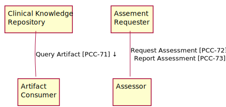

IHE ACDC Implementation Guide
0.1.0 - CI Build
IHE ACDC Implementation Guide
0.1.0 - CI Build
IHE ACDC Implementation Guide, published by Integrating the Healthcare Enterprise (IHE). This is not an authorized publication; it is the continuous build for version 0.1.0). This version is based on the current content of https://github.com/IHE/ACDC/ and changes regularly. See the Directory of published versions
This section defines the actors and transactions in this profile. General definitions of actors are given in the Technical [Frameworks General Introduction Appendix A(http://www.ihe.net/Technical_Framework/index.cfm). Figure 15.1-1 below shows the actors directly involved in the ACDC Profile and the relevant transaction between them.

Figure 15.1-1: ACDC Actor Diagram
Table 15.1-1 lists the transactions for each actor directly involved in the ACDC Profile. To claim compliance with this profile, an actor shall support all required transactions (labeled “R”) and may support the optional transactions (labeled “O”).
| Actors | Transactions | Optionality |
|---|---|---|
| Clinical Knowledge Resource Repository | Query Artifact [PCC-71] | R |
| Artifact Consumer | Query Artifact [PCC-71] | R |
| Assessor | Request Assessment [PCC-72] | R |
| Report Assessment [PCC-73] | R | |
| Assessment Requestor | Request Assessment [PCC-72] | R |
| Report Assessment [PCC-73] | R |
The Clinical Knowledge Resource Repository in this profile responds to FHIR-based queries for one or more clinical knowledge artifacts.
Given that a Clinical Knowledge Resource Repository provides an assessment instrument that a healthcare provider can use to assess a given condition or health concern, it must provide a mechanism by which that assessment can be performed on a given patient. This can be implemented in one of three ways:
The Clinical Knowledge Resource Repository implements the Questionnaire Item Retrieval option, which enables the healthcare provider’s Health IT system to execute the assessment instrument with the Assessor of its choice, or
The Clinical Knowledge Resource Repository implements the Assessor option; it must be grouped with an Assessor that the healthcare provider’s Health IT system can use to execute the assessment instrument.
The Clinical Knowledge Resource Repository implements the EHR Launch Option. It must also provide the Launch URL for the SMART on FHIR application that implements the accessor capabilities.
For each assessment instrument that can be accessed by a Clinical Knowledge Resource Repository, it must do at least one of the following:
Provide the Questionnaire.item fields that can be used to implement the assessment.
Provide at least one Launch URL for a SMART on FHIR application that performs the assessment.
Demonstrate that the Assessor actor it is grouped with can be configured to perform the specified assessment with an Assessment Requestor.
The Artifact Consumer in this profile sends FHIR-based queries to the Clinical Knowledge Resource Repository to search for and obtain one or more clinical knowledge artifacts. Rendering and further processing of these artifacts is defined by the Assessor and Assessment Requester in this profile.
Given that a user with appropriate permissions is operating the provider’s health IT system, when a new assessment instrument is needed, then the user can locate an appropriate assessment instrument, and configure that health IT system to use it to capture an assessment.
A healthcare provider’s health IT system must be able to support assessments from a Clinical Knowledge Resource Repository that implements the Questionnaire Retrieval Option.
A healthcare provider’s health IT system must be able to support assessments from a Clinical Knowledge Resource Repository that implements the Assessor Option.
The Assessor in this profile performs an assessment and reports the results as a QuestionnaireResponse to the appropriate patient and encounter. It must populate the QuestionnaireResponse resource with the appropriate references to the subject, encounter, author and questionnaire resources. The subject, encounter, and author resources must be obtained from the current context of the Assessor actor. The questionnaire resource should be represented by the canonical url which uniquely identifies the assessment instrument.
The Assessment Requester in this profile requests an assessment of an assessor and processes results returned in a QuestionnaireResponse resource. It must accept an assessment as a QuestionnaireResponse resource from the Assessor actor.
| ACDC Actor | Actor to be grouped with | Reference |
|---|---|---|
| Assessment Requestor | Secure Node or Secure Application | PCC TF-15.6.3 |
IG © 2020+ Integrating the Healthcare Enterprise (IHE). Package IHE-ACDC-Profile#0.1.0 based on FHIR 4.0.1. Generated 2020-05-03
Links: Table of Contents |
QA Report
Links: Table of Contents |
QA Report |
Version History  |
|
 |
Propose a change
|
Propose a change